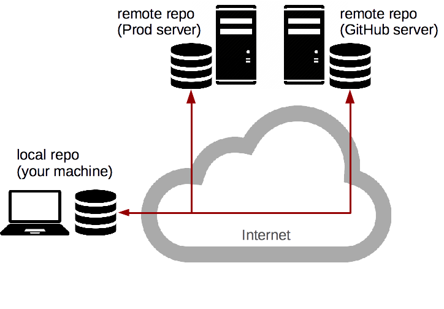

# Collaborating with Git Learn how to collaborate on [GitHub][github] with [Git][git]. This material is part of [architecture & deployment course](https://github.com/MediaComem/comem-archidep) for [Media Engineering](https://heig-vd.ch/formations/bachelor/filieres/ingenierie-des-medias). **You will need** * [Git][git] * A free [GitHub][github] account * A Unix CLI **Recommended reading** * [Git introduction](../git/) * [Git branching](../git-branching/) --- ## Group work .breadcrumbs[<a href="#1">Collaborating with Git</a>] This tutorial is meant to be performed by a group of two. Throughout the rest of the document, the members of the group will be referred to as **Bob** and **Alice**. The tutorial assumes that you have followed the [previous Git tutorial][git-tutorial] and have kept your calculator repository. --- class: center, middle ## Distributed version control system .breadcrumbs[<a href="#1">Collaborating with Git</a>] Working with remote repositories --- ### What is a remote? .breadcrumbs[<a href="#1">Collaborating with Git</a> > <a href="#3">Distributed version control system</a>] A **remote repository** is a version of your project that is hosted on the Internet or network somewhere. You can have **several of them**. Collaborating with others involves **pushing** and **pulling** data to and from these remote repositories when you need to share work. <p class='center'></p> --- ### Centralized workflow .breadcrumbs[<a href="#1">Collaborating with Git</a> > <a href="#3">Distributed version control system</a>] There are [many ways][distributed-workflows] to work with Git as a team. Here we will use a simple **centralized workflow**: <p class='center'><img src='images/centralized-workflow.png' width='60%' /></p> In this workflow: * A **shared central repository** hosted on GitHub * Each developer has a **repository on their local machine** * Each developer will add the shared repository as a **remote** --- ### Working with GitHub .breadcrumbs[<a href="#1">Collaborating with Git</a> > <a href="#3">Distributed version control system</a>] > "[GitHub][github] is a web-based Git repository and Internet hosting service. It offers all of the **distributed version control** and **source code management (SCM)** functionality of **Git** as well other features like access control, bug tracking, feature requests, task management, and wikis for every project." <p class='center'><img src='images/github.png' width='70%'></p> --- #### Create a free GitHub account .breadcrumbs[<a href="#1">Collaborating with Git</a> > <a href="#3">Distributed version control system</a> > <a href="#6">Working with GitHub</a>] Both group members should register on GitHub: <p class='center'><img src='images/github-account.jpg' width='100%'></p> --- #### Create an SSH key .breadcrumbs[<a href="#1">Collaborating with Git</a> > <a href="#3">Distributed version control system</a> > <a href="#6">Working with GitHub</a>] To push code to GitHub, you will need to **authenticate** yourself. There are two methods of authentication: HTTPS username/password or SSH keys. We will use an **SSH key** for this tutorial. You can check if you have one already with this command: ```bash $> ls ~/.ssh id_rsa id_rsa.pub ``` If you see these files, then you already have an SSH key pair (`id_rsa` is the **private** key, `id_rsa.pub` is the **public** key). If you don't (or see a *"No such file or directory"* error), use this command to generate a new key pair (press Enter at every prompt to keep the defaults): ```bash $> ssh-keygen Generating public/private rsa key pair. Enter file in which to save the key (/home/.ssh/id_rsa): Enter passphrase (empty for no passphrase): Enter same passphrase again: Your identification has been saved in /home/.ssh/id_rsa. Your public key has been saved in /home/.ssh/id_rsa.pub. The key fingerprint is: SHA256:ULmjUQDN4Snkh0s9u093mcva4cI94cDk name@host ``` --- #### Copy the SSH key .breadcrumbs[<a href="#1">Collaborating with Git</a> > <a href="#3">Distributed version control system</a> > <a href="#6">Working with GitHub</a>] To authenticate using your SSH key on GitHub, you will need to copy your **public key**. You can display it on the CLI with this command: ```bash $> cat ~/.ssh/id_rsa.pub ssh-rsa AAAAB3NzaC1yc2EAAAADAQABAAAEAQC+OMYWxBCiKa1lZuUc8sLcSBW17h l4VTy9DaarFC98KxS3NQao/7+eMkOS3o1II4QL7pn7WMYITWpWP9UdJKNef/KQlTpS 1QVbhb6iJ2z2+GGt8+b0GvBRAZgab9TeOIrzN1QyknO4 name@host ``` --- #### Add the SSH key to your GitHub account .breadcrumbs[<a href="#1">Collaborating with Git</a> > <a href="#3">Distributed version control system</a> > <a href="#6">Working with GitHub</a>] .grid-20[ <img src='images/github-settings.png' width='100%' /> <img src='images/github-settings-ssh.png' width='100%' /> ] .grid-80[ On GitHub, find the **SSH and GPG keys** section of your account settings and paste your **public SSH key** there: <img src='images/github-settings-ssh-key.png' width='100%' /> (The title of the key is not important. It's useful when you have multiple keys, to remember which is which.) ] --- class: center, middle ## Sharing changes .breadcrumbs[<a href="#1">Collaborating with Git</a>] Clone repositories, push and pull commits --- ### Bob: create a repository on GitHub .breadcrumbs[<a href="#1">Collaborating with Git</a> > <a href="#11">Sharing changes</a>] **Bob** should create a repository from the GitHub menu: .grid-20[ <img src='images/github-new-repo-menu.png' width='100%' /> ] .grid-80[ <img src='images/github-new-repo.jpg' width='90%' /> ] --- ### Bob: add B as a collaborator .breadcrumbs[<a href="#1">Collaborating with Git</a> > <a href="#11">Sharing changes</a>] For this tutorial, both team members will need push access to the repository. **Bob** should go to the repository's **collaborator settings**, and add the GitHub username of **Alice** as a collaborator: <img src='images/github-collaborators.png' width='100%' /> **Alice** must then **_accept the invitation sent by e-mail_** for the change to be effective. --- ### Bob: copy the remote SSH URL .breadcrumbs[<a href="#1">Collaborating with Git</a> > <a href="#11">Sharing changes</a>] **Bob** should copy the SSH URL of the GitHub repository: <img src='images/github-ssh-url.png' width='100%' /> **WARNING:** be sure to select the **SSH** URL, not the **HTTPS** URL (which might be selected by default). --- ### Bob: add the remote to your local repository .breadcrumbs[<a href="#1">Collaborating with Git</a> > <a href="#11">Sharing changes</a>] **Bob** should move into their local repository and add the GitHub repository as a remote: ```bash $> cd /path/to/projects/comem-archidep-git-branching $> git remote add origin git@github.com:bob/github-demo.git ``` It's a convention to name the default remote **origin**. You can check what remotes are available with `git remote`: ```bash $> git remote -v origin git@github.com:bob/github-demo.git (fetch) origin git@github.com:bob/github-demo.git (push) ``` --- ### Bob: push your commits to the shared repository .breadcrumbs[<a href="#1">Collaborating with Git</a> > <a href="#11">Sharing changes</a>] It's time for **Bob** to put the code in the shared GitHub repository. This is done using the `git push` command: ```bash $> git push -u origin main Counting objects: 35, done. Delta compression using up to 8 threads. Compressing objects: 100% (33/33), done. Writing objects: 100% (35/35), 4.16 KiB | 0 bytes/s, done. Total 35 (delta 14), reused 11 (delta 2) remote: Resolving deltas: 100% (14/14), done. To github.com:bob/github-demo.git * [new branch] main -> main ``` The command `git push [remote] [branch]` tells Git to push the commit pointed to by `[branch]` to the remote named `[remote]`. The `-u` option (or `--set-upstream`) tells Git to remember that you have linked this branch to that remote. --- ### Bob: remote branches .breadcrumbs[<a href="#1">Collaborating with Git</a> > <a href="#11">Sharing changes</a>] .grid-60[ <git-memoir name='github' chapter='bob-push' svg-height='300px'></git-memoir> ] .grid-40[ The commit objects and file snapshots have been **pushed** (or uploaded) to the GitHub repository. This includes not only the commit pointed to by main, but also the **entire history** of the repository up to that commit. ] .container[ Note the **origin/main** branch that has appeared in your local repository. This is a **remote-tracking branch**. It tells you where the **main** branch points to on the **origin** remote (the GitHub repository in this case). ] --- ### Alice: get the remote repository's SSH URL .breadcrumbs[<a href="#1">Collaborating with Git</a> > <a href="#11">Sharing changes</a>] **Alice** can now go to the repository's page on GitHub (under **Bob**'s account) and copy the SSH URL: <img src='images/github-clone-url.png' width='100%' /> **WARNING:** again, be sure to select the **SSH** URL, not the **HTTPS** URL (which might be selected by default). --- ### Alice: clone the shared repository .breadcrumbs[<a href="#1">Collaborating with Git</a> > <a href="#11">Sharing changes</a>] **Alice** can now get a copy of the shared GitHub repository on their machine. This is done using the `git clone` command: ```bash $> git clone git@github.com:bob/github-demo.git Cloning into 'github-demo'... remote: Counting objects: 35, done. remote: Compressing objects: 100% (21/21), done. remote: Total 35 (delta 14), reused 35 (delta 14), pack-reused 0 Receiving objects: 100% (35/35), 4.16 KiB | 0 bytes/s, done. Resolving deltas: 100% (14/14), done. $> cd github-demo ``` The `git clone [url]` command copies the **remote** repository to your machine. --- ### Alice: remote branches .breadcrumbs[<a href="#1">Collaborating with Git</a> > <a href="#11">Sharing changes</a>] .grid-60[ <git-memoir name='github' chapter='alice-pull' svg-height='275px'></git-memoir> ] .grid-40[ The entire history of the project is **pulled** (or downloaded) from the GitHub repository. Git will also automatically checkout the **main** branch in the working directory so you have something to work from. Again, Git has created a **remote-tracking branch** in Alice's repository, so that you can know what the current state of the remote is. ] --- ### Alice: make local changes .breadcrumbs[<a href="#1">Collaborating with Git</a> > <a href="#11">Sharing changes</a>] **Alice** thinks that the project's filenames are too long. Let's fix that: ```bash $> mv addition.js add.js $> mv subtraction.js sub.js $> git add . $> git commit -m "Shorter filenames" ``` --- ### Alice: check the state of branches .breadcrumbs[<a href="#1">Collaborating with Git</a> > <a href="#11">Sharing changes</a>] .grid-70[ <git-memoir name='github' chapter='alice-commit' svg-height='275px'></git-memoir> ] .grid-30[ This is now the state of the shared repository and **Alice**'s local repository. There is a new commit in **Alice**'s repository that is not in the shared GitHub repository. ] --- ### Alice: push to the shared repository .breadcrumbs[<a href="#1">Collaborating with Git</a> > <a href="#11">Sharing changes</a>] Push to update the shared repository: ```bash $> git push origin main ``` <git-memoir name='github' chapter='alice-push' svg-height='275px'></git-memoir> --- ### Bob: check the state of branches .breadcrumbs[<a href="#1">Collaborating with Git</a> > <a href="#11">Sharing changes</a>] .grid-60[ <git-memoir name='github' chapter='bob-look' controls='false' svg-height='275px'></git-memoir> ] .grid-40[ This is now the state from **Bob**'s perspective. Notice that the new commit is in the shared repository (on GitHub) but that the remote-tracking branch origin/main **is not up-to-date** in **Bob**'s repository. ] .container[ Git does not automatically sync repositories. **As far as Bob knows** looking at information from their local repository, the main branch still points to `4f94ga` in the shared repository. ] --- ### Bob: fetch changes from the shared repository .breadcrumbs[<a href="#1">Collaborating with Git</a> > <a href="#11">Sharing changes</a>] **Bob** should now get the changes from the shared repository: ```bash $> git fetch origin remote: Counting objects: 2, done. remote: Compressing objects: 100% (1/1), done. remote: Total 2 (delta 1), reused 2 (delta 1), pack-reused 0 Unpacking objects: 100% (2/2), done. From github.com:bob/github-demo 4f94ga..92fb8c main -> origin/main ``` .grid-70[ <git-memoir name='github' chapter='bob-fetch' svg-height='250px'></git-memoir> ] .grid-30[ The new commit is now here and the remote-tracking branch has been updated. However, the local main branch **has not moved** and the working directory has **not been updated**. ] --- ### Bob: check the state of branches .breadcrumbs[<a href="#1">Collaborating with Git</a> > <a href="#11">Sharing changes</a>] Now you can use `git merge` like in the previous tutorial to bring the changes of origin/main into main: ```bash $> git merge origin/main Updating 4f94ga..92fb8c Fast-forward addition.js => add.js | 0 1 file changed, 0 insertions(+), 0 deletions(-) rename addition.js => add.js (100%) ``` .grid-70[ <git-memoir name='github' chapter='bob-merge' svg-height='240px'></git-memoir> ] .grid-30[ As expected, main has been fast-forwarded to the commit pointed to by origin/main and the working directory has been updated. **Bob**'s repository is now up-to-date. ] --- ### Using git pull .breadcrumbs[<a href="#1">Collaborating with Git</a> > <a href="#11">Sharing changes</a>] You can also use `git pull [remote] [branch]` to save time. The following command: ```bash $> git pull origin main ``` Is equivalent to running the two commands we just used: ```bash $> git fetch origin $> git merge origin/main ``` --- class: center, middle ## Managing conflicting commit histories .breadcrumbs[<a href="#1">Collaborating with Git</a>] --- ### Bob: fix the bug .breadcrumbs[<a href="#1">Collaborating with Git</a> > <a href="#28">Managing conflicting commit histories</a>] **Bob** now notices that the last change breaks the calculator. This is because the files were renamed, but the `<script>` tags in `index.html` were not updated. Fix that bug, then commit and push the change: ```bash (Make the fix...) $> git add index.html $> git commit -m "Fix bad <script> tags" $> git push origin main ``` <git-memoir name='github' chapter='bob-fix' svg-height='250px'></git-memoir> --- ### Alice: make other changes .breadcrumbs[<a href="#1">Collaborating with Git</a> > <a href="#28">Managing conflicting commit histories</a>] **Alice**, not having noticed the bug, proceeds to make 2 changes on `index.html`: * Add an `<h2>` title before each computation * Put the two last `<script>` tags on one line ```html *<h2>Addition</h2> <p id="addition">...</p> *<h2>Subtraction</h2> <p id="subtraction">...</p> <script src="calculations.js"></script> *<script src="addition.js"></script><script src="subtraction.js"></script> ``` --- ### Alice: push the other changes .breadcrumbs[<a href="#1">Collaborating with Git</a> > <a href="#28">Managing conflicting commit histories</a>] Commit and push the changes: ```bash $> git add index.html $> git commit -m "Improve layout" $> git push origin main ``` <git-memoir name='github' chapter='alice-fix' svg-height='250px'></git-memoir> --- ### Rejected pushes .breadcrumbs[<a href="#1">Collaborating with Git</a> > <a href="#28">Managing conflicting commit histories</a>] ```bash To github.com:bob/github-demo.git ! [rejected] main -> main (fetch first) error: failed to push some refs to 'git@github.com:bob/github-demo.git' hint: Updates were rejected because the remote contains work that you do hint: not have locally. This is usually caused by another repository pushing hint: to the same ref. You may want to first integrate the remote changes hint: (e.g., 'git pull ...') before pushing again. hint: See the 'Note about fast-forwards' in 'git push --help' for details. ``` .grid-70[ <git-memoir name='github' chapter='alice-fix' controls='false' svg-height='250px'></git-memoir> ] .grid-30[ The push was **rejected** by the remote repository. Why? This is the state of **Alice**'s repository right now. ] --- #### Alice: fetch the changes .breadcrumbs[<a href="#1">Collaborating with Git</a> > <a href="#28">Managing conflicting commit histories</a> > <a href="#32">Rejected pushes</a>] Since Git tells Alice that the local copy of the remote repository is out of date, try fetching those changes: ```bash $> git fetch origin ``` <git-memoir name='github' chapter='alice-fetch-changes' svg-height='325px'></git-memoir> --- #### Alice: try to push again .breadcrumbs[<a href="#1">Collaborating with Git</a> > <a href="#28">Managing conflicting commit histories</a> > <a href="#32">Rejected pushes</a>] ```bash $> git push origin main To github.com:bob/github-demo.git ! [rejected] main -> main (non-fast forward) error: failed to push some refs to 'git@github.com:bob/github-demo.git' hint: Updates were rejected because the tip of your current branch is behind hint: its remote counterpart. Integrate the remote changes (e.g. hint: 'git pull ...') before pushing again. hint: See the 'Note about fast-forwards' in 'git push --help' for details. ``` .grid-70[ <git-memoir name='github' chapter='alice-fetch-changes' controls='false' svg-height='315px'></git-memoir> ] .grid-30[ The push was **rejected again**! **Why?** This is the state of **Alice**'s repository right now. ] --- ### Divergent history .breadcrumbs[<a href="#1">Collaborating with Git</a> > <a href="#28">Managing conflicting commit histories</a>] .grid-70[ <git-memoir name='github' chapter='alice-fetch-changes' controls='false' svg-height='325px'></git-memoir> ] .grid-30[ It's for the same reason as in the previous tutorial: **Bob** and **Alice**'s work have diverged from a common ancestor. A remote repository will **only accept fast-forward pushes** by default. ] --- ### Alice: pull changes from the shared repository .breadcrumbs[<a href="#1">Collaborating with Git</a> > <a href="#28">Managing conflicting commit histories</a>] **Alice** wants to fetch **and** merge the changes made by **Bob**. Let's use the `git pull` command: ```bash $> git pull origin main remote: Counting objects: 3, done. remote: Compressing objects: 100% (2/2), done. remote: Total 3 (delta 1), reused 3 (delta 1), pack-reused 0 Unpacking objects: 100% (3/3), done. From github.com:bob/github-demo * branch main -> FETCH_HEAD 92fb8c..3ff531 main -> origin/main Auto-merging index.html CONFLICT (content): Merge conflict in index.html Automatic merge failed; fix conflicts and then commit the result. ``` The fetch succeeded, but the merge failed because of a **conflict** on `index.html`. --- ### Alice: check the conflict markers .breadcrumbs[<a href="#1">Collaborating with Git</a> > <a href="#28">Managing conflicting commit histories</a>] **Alice** should take a look at `index.html`: ```txt <<<<<<< HEAD <script src="addition.js"></script><script src="subtraction.js"></script> ======= <script src="add.js"></script> <script src="sub.js"></script> >>>>>>> 3ff5311406e73c7d2cc1691f9535214c2543937f ``` Let's make sure we keep it on one line while still renaming the files, and remove the conflict markers:: ```txt <script src="add.js"></script><script src="sub.js"></script> ``` Mark the conflict as resolved and finish the merge: ```bash $> git add index.html $> git commit -m "Merge origin/main" ``` --- ### Alice: check the state of branches .breadcrumbs[<a href="#1">Collaborating with Git</a> > <a href="#28">Managing conflicting commit histories</a>] Now the state of **Alice**'s local repository is consistent with the state of the shared repository: the commit pointed to by **main** is ahead of the commit pointed to by **origin/main**. <git-memoir name='github' chapter='alice-pull-changes' svg-height='325px'></git-memoir> --- ### Alice: push the changes .breadcrumbs[<a href="#1">Collaborating with Git</a> > <a href="#28">Managing conflicting commit histories</a>] The push will be accepted now: ```bash $> git push origin main ``` <git-memoir name='github' chapter='alice-push-merge' svg-height='335px'></git-memoir> --- ### Bob: pull the changes .breadcrumbs[<a href="#1">Collaborating with Git</a> > <a href="#28">Managing conflicting commit histories</a>] **Bob** can now pull those latest changes to keep up-to-date: ```bash $> git pull origin main ``` <git-memoir name='github' chapter='bob-pull-merge' svg-height='335px'></git-memoir> [distributed-workflows]: https://git-scm.com/book/en/v2/Distributed-Git-Distributed-Workflows [git]: https://git-scm.com [git-tutorial]: ../git/ [github]: https://github.com